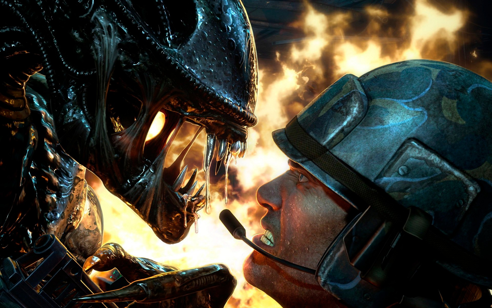
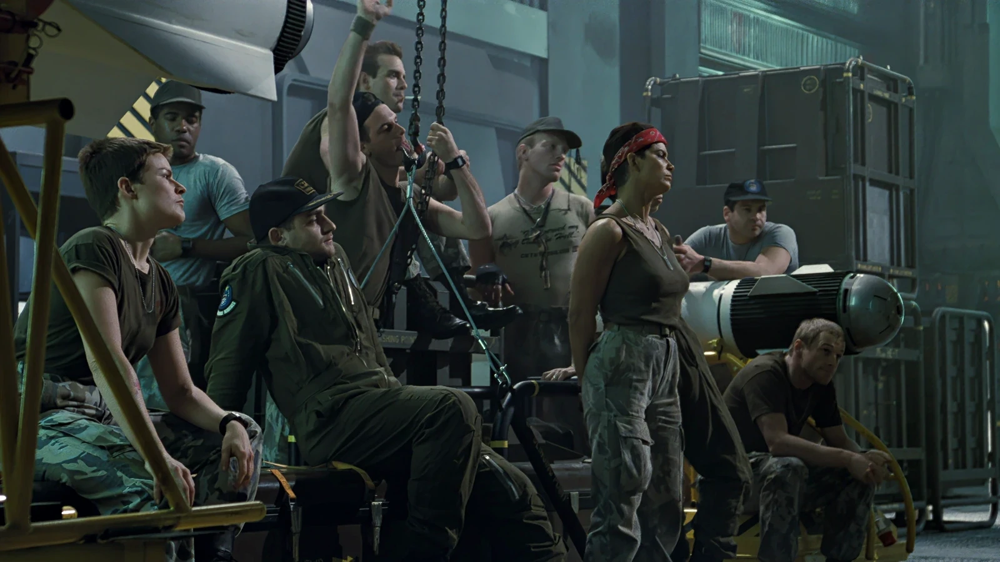
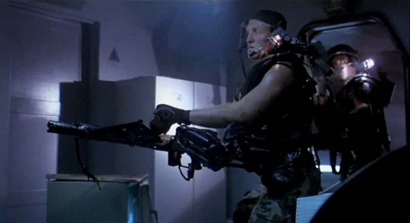

Who Are They?
The United States Colonial Marines are the military unit featured in Aliens (1986). Aboard the warship Sulaco, the squad is sent to LV-426 after contact is lost with the human colony there, with Ripley joining them as an advisor.

A Marine comes face to face with a Xenomorph. (Aliens: Colonial Marines game art, wallpaperflare.com)
The Squad

The squad gathered in the Sulaco's hangar before deployment. (Aliens, 1986 - avpcentral.com)
| Name | Rank | Job |
|---|---|---|
| Apone | Sergeant | Squad leader |
| Hicks | Corporal | Second in command |
| Vasquez | Private | Smartgunner |
| Hudson | Private | Communications technician |
Weapons

A Marine carrying the M56 Smartgun. (Aliens, 1986 - alienanthology.fandom.com)
- M41A Pulse Rifle
- M56 Smartgun
- M240 Incinerator Unit (flamethrower)
- M314 Motion Tracker
Of these, the M56 Smartgun is my personal favorite.
Launch Countdown
- Conduct a weapons check
- Seal the bay doors
- Verify fuel levels
- Clear the launch bay
- Launch
Launch progress: 3 of 5 steps complete